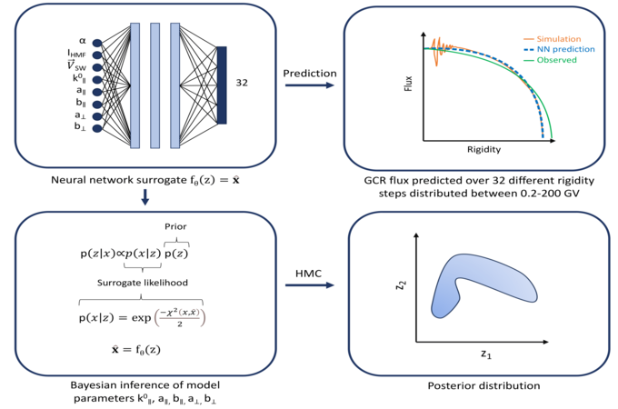
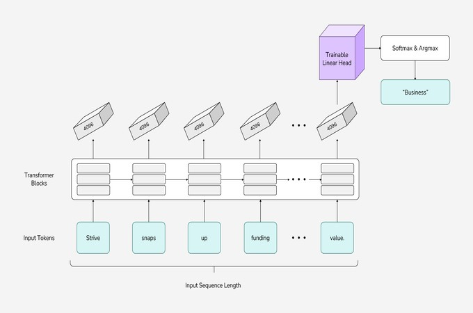
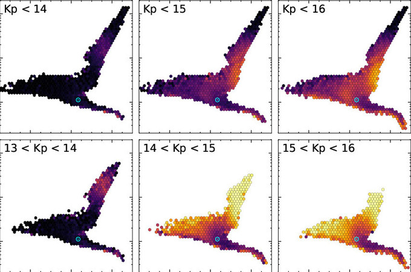
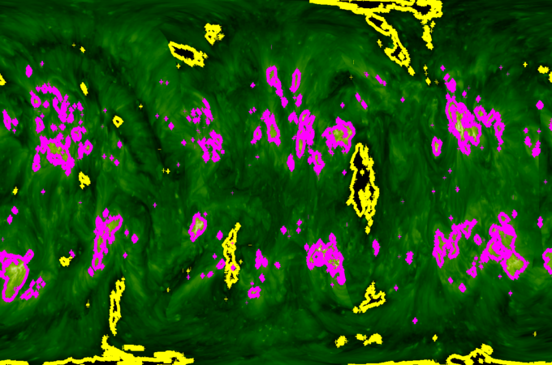
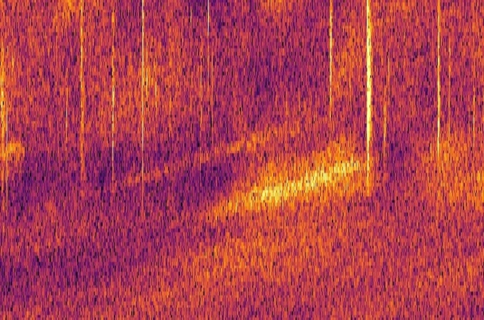
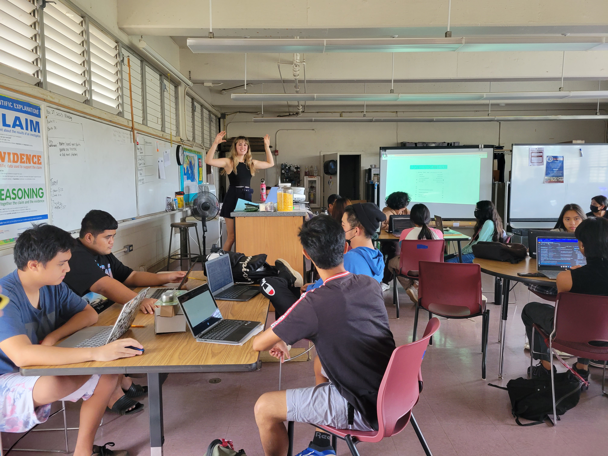

Classifying Supernovae Light Curves using Fourier Neural Operators
My most recent project involves using Fourier Neural Operators to classify supernovae light curves. This research is ongoing, and my code can be found on GitHub.
I am a part of Dr. Peter Sadowski's machine learning lab in the Information and Computer Science department at UH Mānoa.
My research is in part funded by the National Science Foundation Graduate Fellowship (Grant No. 2236415).
My focus is on using scientific domain knowledge to inform machine learning models, specifically in the context of astronomy.
I will recieve my Masters in Computer Science from the University of Hawaiʻi at Mānoa in the summer of 2024, and received my B.A. in Astrophysics from the University of Colorado Boulder in May 2022.
In my free time, I enjoy climbing, surfing, and hiking.
I also received a Minor in Harp Performance at CU Boulder and enjoy playing my harp with university and community orchestras.
I am also the Outreach Coordinator of Graduate Women in Science Hawaiʻi, and during this role I have organized the outreach program "Exploring Beyond: Inspiring Future Planetary Explorer-Scientists"
which involves hosting exoplanet discovery workshops at High Schools around the state of Hawaiʻi and encouraging girls to pursue careers in STEM.
To explore my recent research projects and publications, please visit my projects section.
To get in contact with me about research collaborations or outreach opportunities, please visit my contact section.
My résumé and curriculum vitae can be found in the projects section.
My most recent project involves using Fourier Neural Operators to classify supernovae light curves. This research is ongoing, and my code can be found on GitHub.

This work was presented as a poster at NeurIPS 2023 in the Machine Learning for Physical Sciences Workshop. In this work we accelerate Hamiltonian Monte Carlo sampling by using a neural network surrogate likelihood, and demonstrate the method on a model of the heliospheric transport of galactic cosmic rays, where our approach enables us to estimate the posterior of five latent parameters of the Parker equation. The paper can be found here, the poster can be found here, and a video explaining the work can be found here.

Blog post one can be found here, blog post two can be found here. blog post three can be found here.




Feel free to reach out to me with any questions or opportunities. I am always looking for new research collaborations and outreach opportunities.
{kind=link}